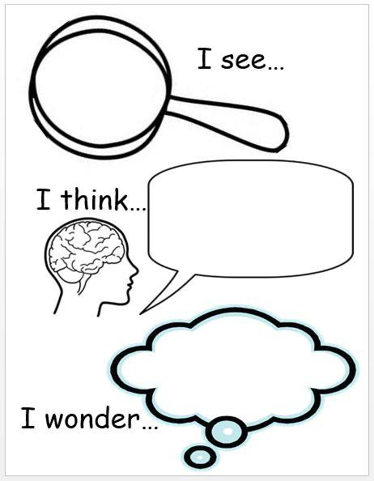

<div id="ajax-page" class="ajax-page-content">
    <div class="ajax-page-wrapper">
        <div class="ajax-page-nav">
            <!-- <div class="nav-item ajax-page-prev-next">
            </div> -->
            <div class="nav-item ajax-page-close-button">
                <a id="ajax-page-close-button" href="#"><i class="lnr lnr-cross"></i></a>
            </div>
        </div>

        <div class="ajax-page-title">
            <h1 style="float:right">التفكر ، التساؤل ، العقل</h1>
        </div>

        <div class="row life">
            <center>
                <div class="col-sm-8 col-md-8 portfolio-block">
                    <div class="owl-carousel portfolio-page-carousel">
                        <div class="item">
                            
                        </div>
                    </div>

                    <!-- <div class="portfolio-page-video embed-responsive embed-responsive-16by9">
                    <iframe class="embed-responsive-item" src="https://www.youtube.com/embed/0pjhD5ySdPs"></iframe>
                </div> -->
                    <script type="text/javascript">
                        jQuery(document).ready(function ($) {
                            $('.portfolio-page-carousel').imagesLoaded(function () {
                                $('.portfolio-page-carousel').owlCarousel({
                                    smartSpeed: 1200,
                                    items: 1,
                                    loop: true,
                                    dots: true,
                                    nav: true,
                                    navText: false,
                                    margin: 10,
                                    autoHeight: true
                                });
                            });
                        });
                    </script>
                </div>
            </center>

            <div class="col-sm-12 col-md-12 portfolio-block conten">
                <!-- Project Description -->
                <div class="project-description">
                    <div class="block-title" style="float: right;">
                        <h3> </h3>
                    </div>
                    <!-- <ul class="project-general-info">
                        <li>
                            <p><i class="fa fa-user"></i>mahmoud yousef</p>
                        </li>
                    </ul> -->

                    <center class="txt">
                        <span>
                            كتير من الناس بيظنوا أن العقل عضو مادى فى الجسد وبتخلط بيه وبين المخ المتواجد فى الدماغ
                            <br>
                            <br>
                            العقل شئ داخل النفس
                            <br>
                            العمليات التفكيرية اللى بتحصل جواك
                            <br>
                            دى اللى اسمها العقل
                            <br>
                            فهو ليس عضواً أو جهازاً
                            <br>
                            هو عمليات بتتم فى الداخل
                            <br>
                            PROCESSING
                            <br>
                            <br>
                            <br>
                            العقل بيشتغل بناءاً على الخبرات الحياتية الموجودة فى الذاكرة
                            <br>
                            والأحداث الجديدة اللى بيتلقاها
                            <br>
                            ثم بتتكون فكرة أو نظرة جديدة للأشياء
                            <br>
                            مع كل عملية تفكير واعية بتزداد الرؤية لدى الشخص
                            <br>
                            <br>
                            <br>
                            لذا فهو أساس الحياة وبه بتتدرج فى معرفة ذاتك وبتقوى إشارات إتصالاك بالخالق
                            <br>
                            وبدونه بيعيش الشخص متعلق بأشخاص حوله وفاقد لذاته
                            <br>
                            وبلا شك متخلف عن الطرق السليمة المتطورة باستمرار
                            <br>
                            <br>
                            <br>
                            الأفكار التى يحدثها العقل بتُشكل الحالة النفسية
                            <br>
                            فكل فكرة معاها طاقتها
                            <br>
                            هذه الطاقة بتنتقل للجسد
                            <br>
                            وبيها بتحدث العمليات الجسدية كالهرمونات وغيرها
                            <br>
                            فالمشاعر هى نتيجة للفكرة
                            <br>
                            <br>
                            <br>
                            وده يبين لك أهمية التركيز بانتباهك على النفس
                            <br>
                            وتعلم تقنيات التحكم فى الأفكار
                            <br>
                            لكى تجعل مشاعرك كيفما تشاء
                            <br>
                            ولا تكن من ضمن أكثر الناس الذين تحركهم مشاعرهم ولا يملكون أى سيطرة عليها ، فقط تقودهم
                            <br>
                            شهواتهم .
                            <br>
                            <br>
                            <br>
                            هذه المشاعر هى التى تؤثر على السلوكيات والأفعال الخارجية
                            <br>
                            الواقع الخارجى هو نتيجة أفعالك وإختياراتك سواء كانت عقلانية أو شهوانية
                            <br>
                            <br>
                            <br>
                            فالأصل هو العقل اللى بيه بيتشكل كل شئ ، فكيف تتركه بلا اهتمام وبلا فلترة للمعلومات التى
                            <br>
                            يتلقاها باستمرار ، كيف لك ألا تتفكر وتترك عقلك للآخرين وتُبخس نفسك ؟
                            <br>
                            <br>
                            <br>
                            عليك أن تعلم أنك تملك أقوى سوفتوير داخلى دوناً عن كثير من المخلوقات الأخرى ، هل تفكرت يوماً
                            <br>
                            لماذا ؟
                            <br>
                            حينما تتفكر بصدق ستعلم أن التفكير أمر لا غنى عنه ما دُمت حيا
                            <br>
                        </span>
                    </center>
                    <span
                    style="font-family: 'Shadows Into Light', cursive; float: right; border-bottom: 0.5px solid white;">Muhammad
                    B. Salama</span>
                <br>
                </div>
                <!-- Project Description -->
            </div>
        </div>
    </div>
</div>